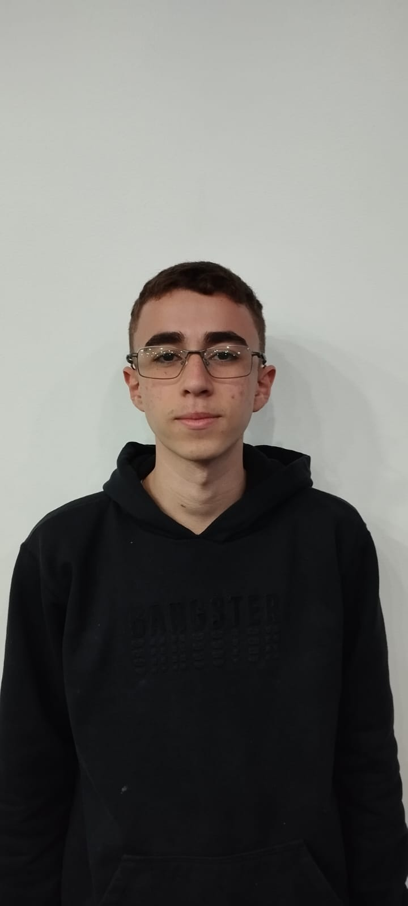

DOSSIÊ 001 / INDUSTRIAL NEXUSINDUSTRIAL MANAGEMENT
NEXUSINDUSTRIAL MANAGEMENT
NEXUSINDUSTRIAL MANAGEMENTGERENCIAMENTO INDUSTRIAL
Nexus IoT
Sistema voltado para o gerenciamento industrial, com foco na otimização de processos.
- HTML
- CSS
- JavaScript
- Firebase
Kauã Everton de Lira / Full Stack em formação
Desenvolvimento web, design e soluções digitais.
Transformando aprendizado em projetos reais.
Código. Design.
Movimento.
01 / PROJETOS SELECIONADOS
Da formação à prática.Projetos de desenvolvimento web
voltados à gestão e organização de processos.
NEXUSINDUSTRIAL MANAGEMENTGERENCIAMENTO INDUSTRIAL
Sistema voltado para o gerenciamento industrial, com foco na otimização de processos.
CONTROLE DE PONTO
Gerenciamento do controle de ponto de funcionários.

PROCEDIMENTOS OPERACIONAIS
Sistema de gerenciamento de POPs — Procedimentos Operacionais Padronizados.
02 / ARSENAL TÉCNICO
Linguagens, tecnologias e ferramentas.Conhecimentos que aplico e desenvolvo
em projetos e desafios práticos.
Construção de interfaces web e experiências em movimento.
Lógica, integrações e desenvolvimento de soluções digitais.
Persistência de dados e versionamento de projetos.

KE / IDENTIDADE 0303 / POR TRÁS DA MÁSCARA
Sou estudante de Análise e Desenvolvimento de Sistemas no SENAI Manuel Garcia Filho, com foco em desenvolvimento web e soluções digitais.
Tenho interesse em design, automação e experiência do usuário. Busco evoluir tecnicamente por meio de projetos práticos e desafios na área de tecnologia.
04 / O PRÓXIMO CAPÍTULO
Vamos conversar sobre desenvolvimento, tecnologia e novas ideias.